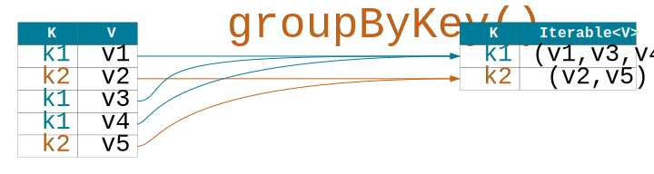
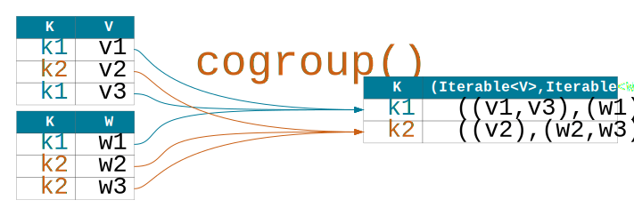
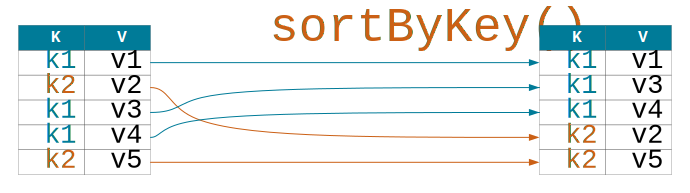
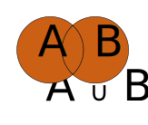
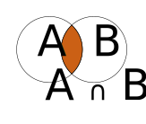

val users = sc.parallelize(List( ("Alice",21), ("Bob",12), ("Bob",18) ))
// users: org.apache.spark.rdd.RDD[(String, Int)]
val movies = sc.cassandraTable("killr_video","movies")
.keyBy( row => (row.getString("title"), row.getInt("release_year")) )
// movies: org.apache.spark.rdd.RDD[((String, Int), com.datastax.spark.connector.CassandraRow)]Example
Find ratings of movies released in 2014

sc.cassandraTable[(Int,Option[Float])]("killr_video","movies")
.select("release_year","rating")
.mapValues(v => v.getOrElse(0.0))
.lookup(2014)
.foreach(println)
// Sample output:
// 6.3
// 6.0
// 5.4This example should be straightforward!
Notice how we obtained a pair RDD in this example by specifying how data should be retrieved from Cassandra and converted into tuples of the form (Int,Option[Float]).
Transformation groupByKey
| Transformation | Description |
|---|---|
groupByKey([numTasks]) |
A new RDD of (K,Iterable<V>) pairs is formed by grouping values for each key in the source RDD of (K,V) pairs. The optional numTasks parameter specifies the number of reduce tasks to use in computation. |

Output movies featuring Johnny Depp grouped by genre

sc.cassandraTable[(String,Int,Set[String])]("killr_video","movies_by_actor")
.where("actor = 'Johnny Depp'")
.select("title","release_year","genres")
.flatMap{case (t,y,gs) => gs.map( g =>(g, t + ", " + y) )}
.groupByKey()
.collect
.foreach(println)
// Sample output for one group:
// (Family,CompactBuffer(
// Alice Through the Looking Glass, 2016,
// Alice in Wonderland, 2010,
// Charlie and the Chocolate Factory, 2005,
// Finding Neverland, 2004))The first challenge solution.
Note that we use the flatMap transformation to generate key-value pairs this time. Inside flatMap, map is not a Spark transformation but rather a method in the Scala Set API.
Transformations cogroup and groupWith
| Transformation | Description |
|---|---|
cogroup(otherRDD, [numTasks]) or groupWith(otherRDD, [numTasks]) |
A new RDD of (K,(Iterable<V>, Iterable<W>)) pairs is formed by grouping values for each key from the source RDD of (K,V) pairs and the otherRDD of (K,W) pairs. The optional numTasks parameter specifies the number of reduce tasks to use in computation. Both cogroup and groupWith refer to the same transformation. |

Output movies with Johnny Depp and movies with Tom Hanks co-grouped by year
val johnnyMovies = sc.cassandraTable("killr_video","movies_by_actor")
.where("actor = 'Johnny Depp'")
.keyBy(row => row.getInt("release_year"))
val tomMovies = sc.cassandraTable("killr_video","movies_by_actor")
.where("actor = 'Tom Hanks'")
.keyBy(row => row.getInt("release_year"))
johnnyMovies.cogroup(tomMovies)
.collect.foreach(println)
// Sample output for one group:
// (2010,CompactBuffer(
// CassandraRow{actor: Johnny Depp, ..., title: The Tourist},
// CassandraRow{actor: Johnny Depp, ..., title: Alice in Wonderland})
// CompactBuffer(
// CassandraRow{actor: Tom Hanks, ..., title: Toy Story 3}))The second challenge solution.
Transformation sortByKey
| Transformation | Description |
|---|---|
sortByKey( [ascending], [numTasks]) |
A new RDD of (K,V) pairs is formed by sorting pairs in the source RDD of (K,V) pairs based on keys in ascending (default) or descending order. The K type must implement trait Ordered. The optional ascending parameter has the default value of true. The optional numTasks parameter specifies the number of reduce tasks to use in computation. |

Output movies from 2010s featuring Johnny Depp ordered by rating
sc.cassandraTable("killr_video","movies_by_actor")
.where("actor = 'Johnny Depp' AND release_year > 2010")
.select("title","release_year","rating")
.as( (t:String, y:Int, r:Option[Float]) => (r.getOrElse(0.0f),(t,y)) )
.sortByKey(false)
.collect
.foreach(println)
// Sample output:
// (7.3,(Rango,2011))
// (6.7,(Pirates of the Caribbean: On Stranger Tides,2011))
// (6.5,(The Lone Ranger,2013))
// (6.3,(Transcendence,2014))The third challenge solution.
Union, Intersection, and Difference
| Operation | Venn Diagram | Generic RDD API | Key-Value Pair RDD API |
|---|---|---|---|
Union |

|
|
|
Intersection |

|
|
|
Difference |

|
|
|
Spark set operations, unlike the mathematical set operations, do not always eliminate duplicates in the result. Duplicate elimination can be done with transformation distinct().
Challenge: Data Validation
Do playlists reference non-existing movies?

val playlists =
sc.cassandraTable("killr_video","playlists_by_user")
.keyBy(row => row.getUUID("movie_id"))
val movies =
sc.cassandraTable("killr_video","movies")
.select("movie_id")
.keyBy(row => row.getUUID("movie_id"))
playlists.subtractByKey(movies)
.collect.foreach(println)
// Sample output:
// CassandraRow{user_id: 709e42f0-5f25-4551-9d85-6e3ad39d6cde,
// playlist_name: Pirate Movies,
// release_year: 2017,
// title: Pirates of DataStax, ...}Periodic data validation is important in Cassandra. For example, data may be duplicated in multiple tables and we want to make sure that all copies are the same. Or a column in one table may reference a key in another table and we want to make sure that we always reference an existing value (aka referential integrity constraint).
In this example, we are validating that any movie in table playlists_by_user is also present in table movies. We are finding violations by computing a difference and outputing those Cassandra rows from playlists_by_user that do not have a matching movie in table movies (such as movie "Pirates of DatStax"!).
Note that you might have seen this challenge before. It was previously solved using leftOuterJoin. The current solution uses subtractByKey, which should result in a better performance.